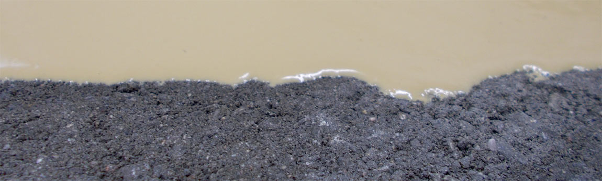
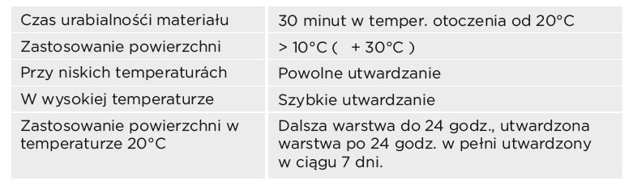
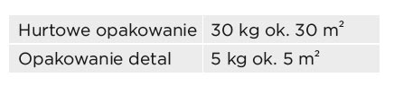

Top Fix jest jednym z podstawowych składników systemu TopStone do wzmacniania podłoża. Unikalny skład pozwala na zastosowanie również do świeżych betonów
Trwale elastyczna dwuskładnikowa hydroizolacyjna masa uszczelniająca na bazie dyspersji kopolimerów i mieszanki zmodyfikowanych dodatków z cementem. Distyk 2K 2K dobrze przylega do podkładu, jest elastyczna, wytrzymuje napór wody i jest odpowiednia zarówno do wnętrz, jak i powierzchni zewnętrznych. Zapewnia trwałą odporność na bezpośredni kontakt z wodą chlorowaną i wapienną.
Hydroizolacja murowanych, betonowych, żelbetowych i gipsowo-kartonowych konstrukcji budowlanych. Warstwa uszczelniająca pod płytki na balkonach, tarasach i loggiach. Przeznaczona do hydroizolacji pod płytki ceramiczne w łazienkach, basenach, zbiornikach wodnych itd. Odporna na wilgoć i wodę. Odpowiednia również jako zabezpieczenie spodu konstrukcji przed oddziaływaniem radonu z podłoża o niskim i średnim indeksie radonowym.
Przygotowanie podłoża: Podłoże musi być suche i czyste, bez tłuszczu i swobodnych elementów, spójne i twarde. Uszkodzony podkład (szczeliny i dziury) należy naprawić np. szpachelką wyrównującą do betonu. Podłoża chłonne należy zagruntować preparatem GRUNTUJĄCYM lub GRUNT GŁĘBOKO PENETRUJĄCY. Przygotowanie mieszanki: Jest dostarczana w proporcji 3:1 (składnik sypki : składnik płynny). Przed aplikacją należy osobno odmierzyć ilość potrzebną do każdej warstwy. Mieszankę przygotowuje się poprzez stopniowe wsypywanie suchego składnika do składnika płynnego przy ciągłym mieszaniu! Mieszanka przed użyciem musi być doskonale zhomogenizowana. W zależności od celu użycia, sposobu nanoszenia i chłonności podłoża przy pierwszej warstwie można dodać do 5% wody. Po dodaniu wody stale mieszać do momentu, gdy masa prawidłowo połączy się z wodą nabierze jednolitego ciemnoszarego koloru. Przygotowaną mieszankę należy nanieść do ok. 2 godzin (w zależności od temperatury nanoszenia) od zmieszania. Aplikacja: Do samej aplikacji zaleca się użycie wałka, pędzla lub kielni stalowej – w przypadku podłoży o dużej chropowatości. Nanosić co najmniej dwie warstwy techniką krzyżową. Do pierwszej naniesionej warstwy i do wszystkich kątów należy wtłoczyć pas uszczelniający, rogi wewnętrzne i zewnętrzne. Po wtłoczeniu pasów uszczelniających i ich przetarciu warstwą masy kontynuować nanoszenie pierwszej warstwy na całej powierzchni. Drugą warstwę nanosi się po wystarczającym stwardnieniu warstwy poprzedniej. Masę można obrabiać w zależności od temperatury powietrza i podkładu do 2 godzin, przy czym temperatura podkładu nie może spaść poniżej +5°C ani przekroczyć +30°C. Należy zapobiegać szybkiemu twardnieniu warstwy pod wpływem bezpośredniego działania promieni słonecznych i wysokiej temperatury. Hydroizolacja nie może stanowić warstwy ostatecznej. Nie jest odporna na promieniowanie UV i pod długotrwałym wpływem promieni słonecznych może zmieniać właściwości.

Materiał hydroizolacyjny do ochrony przed wnikaniem wilgoci lub innych substancji do podłoża.
- Materiał trójskładnikowy tworząc hydroizolacje w oparciu o poliuretanową membraną, bezrozpuszczalnikowy
- Izolacja zewnetrzna - tarasy, balkony,schody,
- Izolacja wewnetrzna - prysznice, łazienki, kuchnie, garaze, anhydrytowe podłogi.
- Wysoka rozciągliwość do 600%, zmniejszona możliwość pęknięć w temperaturze - 10 ° C (2 mm) i dynamiczne rysy do 0,5 mm.
- Szybka aplikacja.
- Odporność na przenikanie korzeni.
- Odporny na działanie wysokich temperatur, chemikaliów i produktów naftowych.
- Przyczepność bez jakiegokolwiek innego dodatkowego mocowania.
- Łatwe i szybkie naprawy lokalnych uszkodzeń.
- Odporność na mróz.

Nie izolować TopPur na powierzchniach, gdzie może wystąpić ciśnienie pary. W przypadku niedostatecznego zamknięcia porowatość mogą się pojawić na powierzchni podłoża wady. Przy wysokiej temperaturze i pod wysokim obciążenia nie można wykluczyć wcięcie w podłodze. Dla ogrzewania pomieszczeń nie należy używać olej napędowy, palniki gazowe, itp., produkujące w miejscu Co2 i pary wodnej, która posiada negatywny wpływ na jakość powierzchni. Nie izolować powierzchni o wilgotności powierzchniowej wyższej niż 4% a wilgotność powietrza nie może przekraczać 70%.

Te wartości zużycia można zmieniać w zależności od konkretnych warunków, a w zależności od konkretnego zastosowania.
W temperaturach> +12 ° C <+25 ° C, w suchym miejscu, w oryginalnym opakowaniu.Okres gwarancji - informacja na opakowaniu.
Przygotowanie podłoża –pozbawienie zanieczyszczeń, odkurzacz, itp., w razie potrzeby drenażu balkon musi być wykonany spad zgodnie z określonymi standardami 1,5 - 2,5 %. Przygotowanie szalunku, ustalające kapie i wszelkie inne elementy kanałów odwadniających, może być używany TopFiller, dylatacja na dużych przestrzeniach musi być i w powierzchni posadzki TopStone.Penetracja materiałem TopFix - (realizacja według instrukcji dla materiału TopFix) dla ogólnegowzmocnienia, lepszej spójności i przyczepności do podłoża.Zastosowanie TopPur - 24 godziny po aplikacji penetracji może być stosowana membrana poliuretanowa.Nie jest konieczne szlifowanie w ciągu 3 dni, po 3 dniach należy precyzyjnie szlifowaćpodkład.5. Wytwarzanie TopPur - dokładne wymieszanie dwóch składników A i B, stosując mieszadło ( 300-400obr. /min. ) czas mieszania 3 minuty. Dodanie składnika C do mieszaniny składników A i B (wolnoporuszającej wiertarki). Podczas mieszania jest konieczne, aby do materiału niepotrzebnie wmieszanopowietrze i po pierwszym mieszaniu materiał przelać do innego pojemnika i ponownie mieszać. Takprzygotowany materiał rozciągnąć za pomocą pacy zębatej i następnie wałkować odpowietrznikowymwałkiem (Posadzka powierzchni TopStone po 24 godzinach po aplikaci TopPur ).
Zastosowanie tylko na suchej nawierzchni! Mieszankę zalecamy do stosowania przy rosnącej temperaturze (eliminuje możliwość kondensacji wilgoci na powierzchni materiału). TopPur natychmiast po zmieszaniu nakładamy na powierzchnię. Jeśli tego nie zrobimy,to po następnym mieszaniu (więcej niż 5-10 minut) powstaje ryzyko spontanicznej egzotermicznej reakcji! Narzędzia i skóre zanieczyszczone materiałem nieutwardzonym oczyszczamy acetonem, a utwardzoną masę mechanicznie , szlifowanie, itp. Podczas instalacji TopStone powierzchni po więcej niż 3 dniach od aplikacji TopPur jest koniecznie przeszlifowanie.